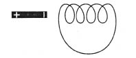
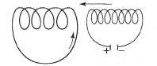
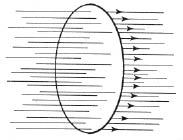

“Bir elektriksel alanın değişmesi, magnetik bir alanın ortaya çıkması ile birlikte olur.” “Magnetik” ve “elektriksel” sözcüklerinin yerlerini değiştirirsek, bu tümce şu duruma gelir: “Bir magnetik alanın değişmesi, bir elektriksel alanın ortaya çıkması ile birlikte olur.” Bunun doğru olup olmadığını ancak deney saptayabilir. Ama bu problemi formülleştirmeyi düşündüren, alan dilinin kullanılmasıdır.
Faraday, yüz yılı aşkın bir süre önce, önemli bir olaya, indüklenmiş (etkiyle yaratılmış) akımların bulunmasına yol açan bir deney yaptı.
İndüklemenin deneyle gösterilmesi çok kolaydır. Yalnız bir makara ya da başka bir devre, bir mıknatıs çubuğu ve bir de elektrik akımının varlığını ortaya çıkarmaya yarayan çeşitli aygıtlardan biri gereklidir. Önce, bir mıknatıs çubuğu, kapalı bir devre oluşturan bir makaranın yanında hareketsiz durmaktadır. Telden hiç akım geçmemektedir; çünkü hiçbir akım kaynağı yoktur. Yalnızca mıknatıs çubuğunun zamanla değişmeyen durgun magnetik alanı vardır. [Şekil-49] Şimdi, mıknatısın konumunu çabucak değiştiriyoruz. Bunu ister mıknatısı makaradan uzaklaştırarak, ister makaraya yaklaştırarak yapıyoruz. O anda, çok kısa bir süre için, bir akım ortaya çıkar ve yiter. Mıknatısın konumunun değiştirildiği her zaman akım yeniden ortaya çıkar ve uygun duyarlıktaki bir aygıtla saptanabilir. Ama bir akım, –alan teorisine göre– elektrik akışkanlarını tel boyunca akmaya zorlayan bir elektrik alanının varlığı demektir. Akım ve dolayısıyla elektriksel alan, mıknatıs yeniden hareketsiz kalınca yiter.

[Şekil-49]
Alan dilinin bilinmediğini, ve bu deneylerin sonuçlarını –nitel ve nicel olarak– eski mekanik kavramlarla tanımlamak gerektiğini bir an için düşününüz. O zaman deneyimiz şunu gösterir: Magnetik bir kutup-çiftinin hareketi ile, elektrik akışkanını telde hareket ettiren yeni bir kuvvet yaratıldı.
Bundan sonra şu sorulurdu: Bu kuvvet neye bağlıdır? Bu soruya yanıt vermek çok güç olurdu. Kuvvetin, mıknatısın hızına, biçimine ve devrenin biçimine bağlılığını araştırmamız gerekirdi. Bundan başka, söz konusu deney, eski dille söylenirse, bir mıknatıs çubuğunun hareketi yerine, akım taşıyan başka bir devrenin hareketi ile indüklenmiş akım elde edilip edilmeyeceği konusunda hiçbir ipucu vermez.
Alan dilini kullanırsak ve “etkiyi alan belirler” ilkesine bir daha güvenirsek, sorun bambaşka olur. İçinden akım geçen bir makaranın bir mıknatıs çubuğu gibi işe yaradığını görüveririz. Şekil, iki makarayı gösteriyor: Makaralardan biri, içinden akım geçen, küçüktür; içinde indüklenmiş akım yaratılmak istenen öbürü ise daha büyüktür. [Şekil-50]

[Şekil-50]
Küçük makarayı, demin mıknatıs çubuğunu hareket ettirdiğimiz gibi hareket ettirerek, büyük makarada indüklenmiş akım yaratabiliriz. Bundan başka, küçük makarayı hareket ettirecek yerde, akım yaratarak ve akımı yok ederek, yani, devreyi açıp kapayarak, magnetik bir alan yaratabilir ve onu yok edebiliriz. Alan teorisinin düşündürdüğü yeni olgular, deneyle bir daha doğrulanıyor!
Daha basit bir örnek alalım: Çember biçiminde kapalı bir tel var ve hiçbir akım kaynağı yok. Telin yakınında bir yerde, magnetik bir alan bulunuyor. Bu magnetik alanın kaynağı, içinden akım geçen bir devre ya da bir mıknatıs çubuğu olabilir; bunun bizim için hiç önemi yoktur. Şekil, kapalı devreyi ve magnetik kuvvet çizgilerini gösteriyor. [Şekil-51]

[Şekil-51]
Alan terminolojisi kullanılırsa, indükleme olayının nitel ve nicel tanımı çok kolaydır. Bazı kuvvet çizgileri, şekilde görüldüğü gibi, telin sınırladığı yüzeyi delip geçmektedir. Telin çevrelediği düzlem parçasını delip geçen bu kuvvet çizgileri üzerinde durmalıyız. Alan değişmediği sürece hiçbir elektrik akımı yoktur; alanın kuvveti, ne kadar büyük olursa olsun, önemsizdir. Ama telin çevrelediği yüzeyi delip geçen kuvvet çizgilerinin sayısı değişir değişmez, telden bir akım geçmeye başlar. Akımın varlığı, bu yüzeyden geçen kuvvet çizgilerinin sayısının değişmesine –bu değişme neden ileri gelirse gelsin– bağlıdır. Kuvvet çizgilerinin sayısındaki bu değişme, indüklenmiş akımın hem nitel, hem de nicel tanımı için gerekli biricik kavramdır. “Kuvvet çizgilerinin sayısı değişiyor” demek, çizgilerin sıklığı değişiyor ve bu da, bildiğimiz gibi, alanın kuvveti değişiyor demektir.
Öyleyse düşünüşümüzün zincirlenmesindeki başlıca noktalar şunlardır: Magnetik alan değişmesi indüklenmiş akım elektrik yükü hareketi bir elektriksel alanın varlığı.
Bundan ötürü, değişen bir magnetik alana bir elektriksel alan eşlik eder.
Böylece, elektriksel ve magnetik alan teorisinin en önemli iki dayanağını bulduk. Birincisi, değişen elektriksel alan ile magnetik alan arasındaki bağlantıdır. Bu, Oersted’in magnetik iğnenin sapmasına değgin deneyinden çıktı ve şu sonucu verdi: Değişen bir elektriksel alana magnetik bir alan eşlik eder.
İkincisi, değişen magnetik alan ile indüklenmiş akımı birleştirmektedir ve Faraday deneyinden çıkmıştır. İkisi birlikte, nicel tanımın tabanını oluşturmaktadır.
Değişen magnetik alanla birlikte ortaya çıkan elektriksel alan da, gerçek bir şey gibi görünmektedir. Daha önce, bir akımın magnetik alanının, bir sınama kutbu olmaksızın varolduğunu düşünmemiz gerekmişti. Bunun gibi, burada da, indüklenmiş akımın varlığını sınamaya yarayan tel olmaksızın, elektriksel alanın varolmasını istememiz gerekiyor.
Gerçekte, alan teorisinin iki dayanağını bire indirebiliriz, yani yalnız Oersted deneyinden çıkanla yetinebiliriz. Faraday deneyinin sonucu, enerjinin korunumu yasasının yardımı ile bundan çıkarılabilir. Bu iki dayanağı söz konusu etmemiz, yalnız açık ve özlü bir anlatım uğrunadır.
Alanın tanımlanmasından çıkan bir sonuç daha anılmalıdır. İçinden akım geçen bir devre var. Akımın kaynağı, söz gelimi bir volta bataryasıdır. Tel ile akımın kaynağı arasındaki bağlantı birdenbire kesiliyor. Elbette artık akım yoktur! Ama bu kısa kesilme sırasında çapraşık bir olayla karşılaşılır. Bu da, alan teorisi ile öngörülebilen bir süreçtir. Akımın kesilmesinden önce, teli kuşatan magnetik bir alan vardı. Bu alan, akım kesildiği anda yitti. Bundan dolayı, bir akımın kesilmesi ile magnetik bir alan ortadan kalktı. Telin çevrelediği yüzeyi delip geçen kuvvet çizgilerinin sayısı değişiverdi. Ama her nasılsa ortaya çıkan böyle çabuk bir değişme, indüklenmiş bir akım yaratmalıdır. Gerçekten önemli olan, magnetik alanın değişmesidir. Bu değişme ne kadar büyükse, indüklenmiş akım da o kadar kuvvetli olur. Bu sonuç, teori için yeni bir sınavdır. Bir akımın kesilmesi ile birlikte kuvvetli geçici bir indüklenmiş akım ortaya çıkmalıdır. Deney, bu öngörüyü gene doğrular. Bir akımı kesen herkes, bir kıvılcım doğduğunu fark etmiştir. Bu kıvılcım, magnetik alanın değişivermesinden ileri gelen kuvvetli gerilim farklarını açığa vurmaktadır.
Aynı süreç, başka bir bakımdan, yani enerji bakımından da incelenebilir. Magnetik bir alan yitti ve bir kıvılcım belirdi. Kıvılcım, enerjinin varlığını gösterir. Bundan dolayı, magnetik alan da enerjinin varlığını göstermelidir. Alan kavramını ve alan dilini tutarlı olarak kullanmak için, magnetik alanı bir enerji yığınağı olarak düşünmeliyiz. Elektrik görüngülerini ve magnetik görüngüleri enerjinin korunumu yasasına uygun olarak, ancak bu yoldan tanımlayabiliriz.
Önce yardımcı bir model olarak ortaya çıkan alan, giderek gerçeklik kazandı. Eskiden bilinen olguları anlamamıza yardım etti ve bizi yeni olgulara götürdü. Enerjinin alana yorulması, alan kavramının gittikçe önem kazandığı ve mekanikçi düşünüş için vazgeçilmez olan töz kavramlarının gittikçe değerden düştüğü gelişme sırasında, ileri bir adımdır.